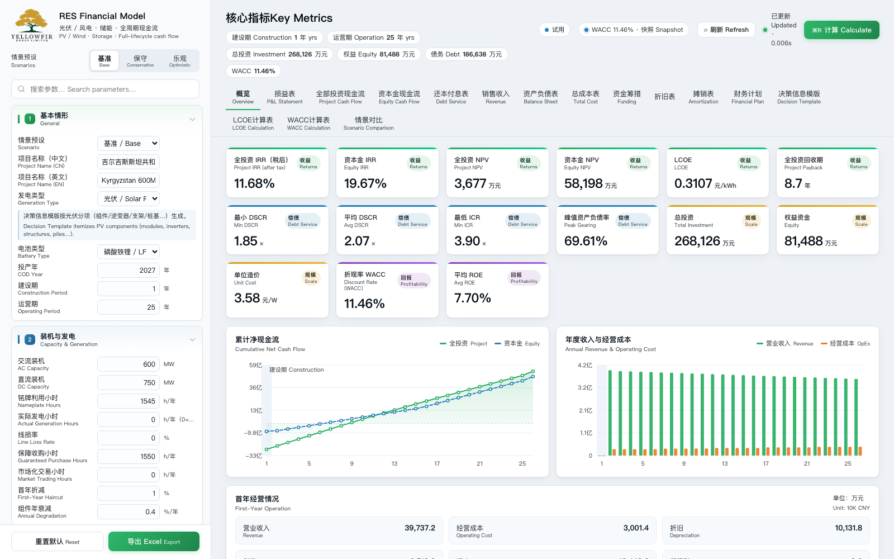
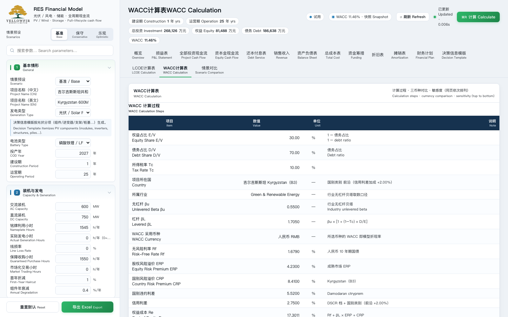

RES Financial Model Professional financial modeling for renewable energy projects
面向光伏、风电与储能项目的专业财务分析软件。14 张专业报表、WACC 三币种对比与敏感度分析、LCOE、可编辑决策信息模版与情景对比，中英双语界面与导出，全部在桌面端完成。 A professional financial analysis tool for solar, wind and storage projects — 14 statements, multi-currency WACC with sensitivity, LCOE, an editable decision template, scenario comparison, and bilingual Chinese/English output.
系统要求：macOS 12 Monterey 或更高（Apple Silicon 与 Intel 各有对应安装包）；Windows 10/11（64 位，需 WebView2 运行时，Windows 11 已内置）。首次打开若提示"无法验证开发者"：macOS 请右键点击应用图标 → 选择"打开"；Windows 在 SmartScreen 提示中点击"更多信息" → "仍要运行"。System requirements: macOS 12 Monterey or later — separate builds for Apple Silicon and Intel; Windows 10/11 (64-bit, WebView2 runtime required — built into Windows 11). On first launch, if the developer cannot be verified: on macOS, right-click the app icon → Open; on Windows, click "More info" → "Run anyway" in the SmartScreen prompt.
Windows 免安装版：下载 ZIP（26 MB），解压后直接运行 RES Financial Model.exe。Portable Windows build: download the ZIP (26 MB) and run RES Financial Model.exe after extracting.
界面一览 Interface
左侧参数区与右侧报表联动，任何参数修改即时重算。The parameter panel on the left is linked to the reports on the right — every edit recalculates instantly.


核心功能 Features
覆盖从投资测算、融资结构到回报评价的完整链条。One complete chain — from cost build-up and financing structure through to return evaluation.
14 张专业报表14 Professional Statements
损益表、全投资/资本金现金流、还本付息、销售收入、资产负债表、总成本、资金筹措、折旧、摊销、财务计划，以及决策信息模版、LCOE 计算表与 WACC 计算表。 14 statements covering P&L, project and equity cash flow, debt service, balance sheet, funding, depreciation and more.
WACC 三币种与敏感度Multi-currency WACC & Sensitivity
资本资产定价模型自动计算，支持人民币、美元与本币三种口径对比；内置 Rd × 国别风险溢价 5×5 敏感度矩阵，实时标注当前基准。 CAPM-based WACC with RMB / USD / local-currency comparison and a 5×5 Rd × country-risk sensitivity grid.
联网实时取数Live Market Data
启动后自动联网获取美国 10 年期国债收益率、Damodaran 国别风险溢价与行业 β，断网时回退本地快照，保证随时可用。 Live FRED 10-year Treasury, Damodaran country risk premiums and sector betas, with an offline snapshot fallback.
决策信息模版Decision Template
四节式投资构成表：项目建设、建设期利息与业主管理费、前期开发、EPC 总包。单价可直接编辑并回写模型，结余自动反推平衡。 Editable four-section investment composition template with automatic balancing.
光伏 / 风电 / 储能Solar / Wind / Storage
支持光伏与风电两类项目、储能配置、自维与外委两种运维模式、定额与比例两种成本法，参数按项目类型自动显隐。 Solar and wind, storage, in-house or outsourced O&M, and fixed or ratio-based cost methods.
中英双语Bilingual Chinese / English
界面与导出 Excel 全部采用中文主行 + 英文副行，可直接用于境内汇报与境外交易文件。 Bilingual Chinese/English interface and Excel export.
情景对比Scenario Comparison
内置基准、保守、乐观等情景预设，一键载入；多方案关键指标并列比较。 Built-in base / conservative / optimistic scenarios with side-by-side comparison.
一键导出 ExcelOne-click Excel Export
将全部参数、指标与报表导出为格式化工作簿，便于二次审阅与归档。 Export every parameter, metric and statement to a formatted Excel workbook.
价格 Pricing
一次性付费，按设备授权，不自动续费。每台设备可免费试用累计 1 小时；试用期内可随时购买，付款后立即转为正式授权，无需等到试用结束。价格以美元结算，由 Paddle 作为 Merchant of Record 收款并处理税费。One-time payment, licensed per device, no auto-renewal. Every device gets a cumulative 1-hour free trial, and you can buy at any time during the trial — your licence activates immediately, with no need to wait for the trial to end. Prices are in USD, collected by Paddle as Merchant of Record, which also handles taxes.
| 授权时长 License | 价格 Price (USD) | 适用场景 Best for | 购买 Buy |
|---|---|---|---|
| 1 天 / 1 day | $2 | 单次测算、快速验证 One-off calculation | 购买 Buy |
| 7 天 / 7 days | $5 | 短期尽调或投标 Short due diligence | 购买 Buy |
| 1 月 / 1 month | $7 | 项目前期论证 Project screening | 购买 Buy |
| 3 月 / 3 months | $12 | 可研与投资决策 Feasibility study | 购买 Buy |
| 半年 / 6 months | $20 | 交易推进期 Deal execution | 购买 Buy |
| 一年 / 1 year 推荐 Best | $35 | 全年多项目使用 Year-round use | 购买 Buy |
| 永久 / Lifetime | $50 | 长期自用、不受期限限制 Permanent use | 购买 Buy |
How to buy: click Buy in the table above, or open the app and click the license button in the top-right corner. Payment is handled by Paddle (cards, PayPal, Apple Pay, Google Pay, WeChat Pay). After a web purchase, paste the order number from the confirmation page into the app's Restore dialog; in-app purchases unlock automatically.
使用流程 How it works
下载对应平台安装包：macOS 双击 DMG、把应用拖入"应用程序"文件夹；Windows 运行安装程序（或解压免安装版）。首次打开按上方提示允许运行。Download the build for your platform — double-click the DMG and drag the app into Applications on macOS, or run the installer (or extract the portable ZIP) on Windows. On first launch, allow it to run as described above.
启动后自动获得累计 1 小时免费试用，期间可使用全部功能并导出报表。You get a cumulative 1-hour free trial automatically — all features and report export included.
试用期内可随时在软件内选择授权时长并支付，付款后立即解锁正式使用，无需等到试用结束。You can buy at any point during the trial — choose a licence term and pay inside the app; it unlocks immediately, with no need to wait for the trial to end.
授权绑定当前设备；更换电脑时请联系客服转移授权。The licence is bound to this device; to move to a new computer, contact support to transfer it.
常见问题 FAQ
授权是绑定账号还是设备？Is the licence bound to an account or a device?
授权绑定设备（基于设备硬件标识匿名生成，不含个人信息）。同一台电脑重装系统后授权仍然有效；更换电脑请联系 yellowfir@yellowfir.com 办理转移。The licence is bound to a device, using an anonymous hash derived from hardware identifiers — no personal data is involved. It survives an OS reinstall on the same computer; to move to another computer, contact yellowfir@yellowfir.com for a transfer.
需要联网吗？Does it need an internet connection?
WACC 实时取数需要联网；断网时会使用本地快照继续工作。授权验证同样需要定期联网（已购授权可离线使用最长 72 小时）。Live WACC data needs the internet; offline, the app falls back to a local snapshot. Licence validation also needs periodic connectivity — a purchased licence can be used offline for up to 72 hours.
可以开发票 / 收据吗？Can I get an invoice or receipt?
可以。Paddle 作为 Merchant of Record 会在付款后发送电子收据至您的邮箱；如需公司发票，请联系 yellowfir@yellowfir.com 并提供订单号。Yes. Paddle, as Merchant of Record, emails an electronic receipt after payment. For a company invoice, contact yellowfir@yellowfir.com with your order number.
支持哪些平台？Which platforms are supported?
同时提供 Apple Silicon 与 Intel 两个 macOS 安装包（macOS 12 Monterey 或更高），以及 Windows 10/11 64 位安装包（需 WebView2 运行时，Windows 11 已内置）。三个安装包功能一致、授权互通，按当前设备绑定。更换电脑时，在新机器的授权窗口输入原订单号即可自助迁移：旧机随即停用、剩余时间自动跟随，每份授权可迁移 3 次、两次间隔 7 天。Three builds are available: Apple Silicon and Intel for macOS 12 Monterey or later, plus a Windows 10/11 64-bit build (WebView2 runtime required — built into Windows 11). All three are feature-identical, share the same licensing, and bind to the current device. To move to a new computer, enter the original order ID in the licence window on the new machine: the old machine is deactivated, remaining time carries over, with up to 3 self-service moves spaced 7 days apart.
导出的 Excel 可以做什么？What can I do with the exported Excel?
导出的工作簿包含全部参数、核心指标、11 张年度序列表、决策信息模版、LCOE 与 WACC 计算表，可直接用于内部评审、投资决策或提交给合作方。The exported workbook contains every parameter, key metrics, 11 annual time-series statements, the decision template, and the LCOE and WACC sheets — ready for internal review, investment decisions or sharing with partners.
退款政策？What is the refund policy?
详见 退款政策 Refund Policy：首次购买 7 日内且授权尚未激活使用的，可申请全额退款。See the Refund Policy: full refunds are available within 7 days of the first purchase, provided the licence has not yet been activated.